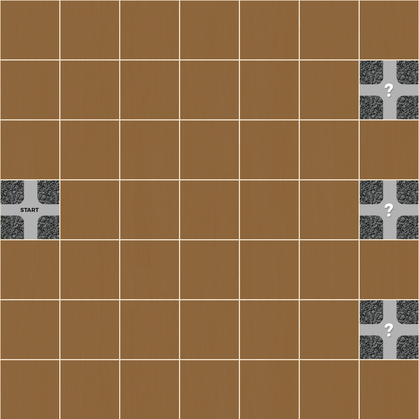
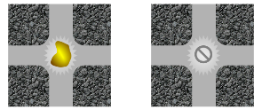
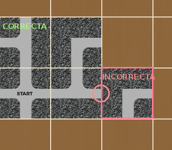
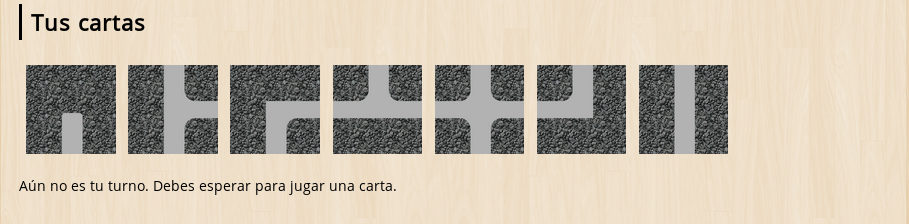

En este juego cada jugador toma el papel de un enano que busca oro en una mina. La mina se representa como un tablero de siete filas y siete columnas. Los jugadores parten de una casilla de salida y deben llegar a una de las tres casillas de destino.
Inicialmente el contenido de esas casillas es desconocido. Lo único que los jugadores conocen es que una de ellas contiene una pepita de oro y las dos restantes no contienen nada.
Existen dos clases de jugadores: enanos buscadores y enanos saboteadores. Cada jugador recibe un rol al principio de la partida, y este rol permanece secreto para los demás jugadores. Los buscadores y los saboteadores tienen objetivos contrapuestos:
La cantidad de buscadores y saboteadores depende del número total de jugadores en la partida. Cada jugador obtiene al inicio de la partida una serie de cartas. El juego transcurre por turnos y el jugador que tiene el turno puede realizar una de las siguientes acciones:
Colocar una de sus cartas en el tablero
Para poner una carta en el tablero de forma correcta, la carta colocada debe encajar con las que ya hay sobre el tablero y además debe ser alcanzable desde la casilla de salida.
Desechar una de sus cartas de grutas
El jugador eliminará una de sus cartas y recibirá otra a cambio, aunque perderá el turno.
Usar una de sus cartas especiales
El jugador podrá hacer uso, una vez por partida, de sus cartas especiales. Su funcionalidad es la siguiente:
Cuando el laberinto de grutas construidas alcanza una de las casillas de destino en la columna derecha, se revelará el contenido de la casilla. Si contiene una pepita de oro, los enanos buscadores ganan la partida. Si no contiene nada, se continúa el juego para que los buscadores puedan prolongar alguna de las rutas construidas a otra de las casillas de destino. Por el contrario, si ha transcurrido una cantidad determinada de turnos sin que los buscadores hayan alcanzado la casilla que contiene la pepita de oro, los saboteadores ganan la partida.
Volver a la página principal